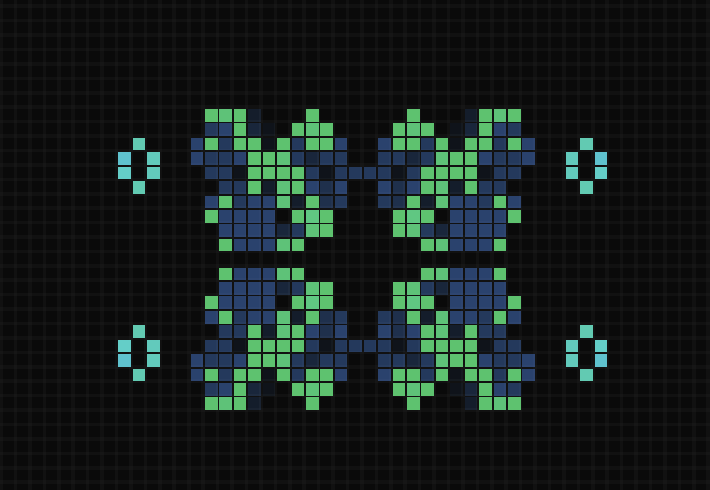

houfu@research:~$ simulate --world --one-system-at-a-time
I build small, working worlds.
I’m Houfu Chen — a digital twin researcher and engineer connecting mechanistic models, noisy sensor data, and machine learning to make complex systems tangible, testable, and understandable.
- Python
- PyTorch
- COBRApy
- State-space models
01 / PROFILE
Engineer by training. Builder by instinct.
I work where models meet reality: noisy signals, heterogeneous environments, and systems that need to stay useful outside a notebook.
I’m a PhD candidate and engineer with one practical obsession: putting a working version of the world in my hands, then using it to ask better questions.
- 01 Building living digital twins for heterogeneous environments.
- 02 Integrating machine learning, signal filtering, and probabilistic state estimation.
- 03 Turning theoretical models into working systems that can be tested against reality.
Education
- MEng in Electrical and Computer Engineering University of Toronto (Graduated March 2025)
- BASc in Nanotechnology Engineering University of Waterloo (Graduated June 2023, With Distinction)
- Featured alumni in the Data Analytics and Machine Learning Emphasis at UofT. Read more here.
Industry Experience
- Ford Motor - CarPlay Network Performance
- Manulife - Online Banking Development
- Teranet - QA Automation
- Imagine Communications - Quality Assurance
Teaching & Research
- Teaching Assistant Machine Learning & Python at University of Toronto
- Research Assistant Organic Solar Cell Technologies at University of Waterloo
Project Highlights
- Living Greenhouse Digital Twin
- Smart Evacuation Maps
- S.W.I.M (Sponsored by Prof. Steve Mann)
- Browser Tools & Game of Life
Greenhouse-Level Digital Twin Framework
> Status: Active PhD Research · Prototype Integration
- Designing a probabilistic state-estimation framework to create a living digital twin of a heterogeneous greenhouse environment.
- The Core Architecture: Bridging the gap between mechanistic biological predictions and noisy real-world sensor data.
- Mathematical Frameworks: Implementing dynamic Flux Balance Analysis (dFBA) and Kalman Filtering to continuously track and correct hidden biomass states across multiple spatial zones.
- Tech Stack: Python, COBRApy, State-Space Models, NumPy, SciPy
System Capabilities
- [SYS] Languages: Python, C++, JavaScript, TypeScript, Java, C#, R, SQL
- [ML] Machine Learning: PyTorch, TensorFlow, Scikit-learn, DeepFace, MediaPipe, State-Space Models
- [DAT] Data & Analysis: Pandas, NumPy, SciPy, COBRApy, Data Visualization
- [CFG] Frameworks & Tools: React, Node.js, Git, Docker, AWS, Azure, Selenium
02 / EXPERIENCE
Research is the thread. Range is the toolkit.
My current PhD work leads the story; teaching, product engineering, and consulting give me the range to carry ideas into real systems.
Management / Consulting
Complaints Management & Operational Consulting @ FAW-Volkswagen
Dispute Resolution, Risk Prevention
May 2024 – July 2025
- Handled high-risk complaints escalated by frontline agents.
- Assessed solution fairness and determined fault through cross-functional coordination.
- Built and maintained QBI Kanban boards to track complaint progress.
CAN Tech Industry
Performance Testing Engineer @ Ford Motor Company
Ubuntu, iperf3, TCP/IP, Selenium
May 2022 – August 2022
QA-Developer @ Manulife
JavaScript, React, WebDriver IO
January 2020 – April 2020
QA Automation Specialist @ Teranet CMS
C#, Selenium
September 2020 – December 2020
Teaching Experience
APS1070 (Foundations of Data Analytics and ML) @ UofT
- Graded more than 200 projects per term
- Led 10+ Tutorials per term
MIE370 (Introduction to ML) @ UofT
- Created 2 Projects, 2 Tutorials, 2 Exam Questions
Research Experience
PhD Researcher @ University of Waterloo
Living Digital Twins, dFBA, State Estimation
Current
- Developing a living greenhouse twin that connects mechanistic biological models with noisy, heterogeneous sensor data.
- Supervised by Prof. Nasser Mohieddin Abukhdeir and Prof. Christian Euler in Chemical Engineering.
Research Assistant @ Prof. Yuning Li's Lab, UWaterloo
Chromatography, UV Testing, Organic Solar Cells
May 2019 – August 2019
- Conducted chromatography and UV testing for organic solar cell research.
03 / SELECTED WORK
Proof lives in the prototype.
Three systems show the same instinct: model the world, test the model, and make the result useful outside a notebook.
FLAGSHIP RESEARCH · UNIVERSITY OF WATERLOO
A living digital twin for heterogeneous greenhouses
> Active PhD research · prototype integration
- ProblemGreenhouses are spatially uneven, partially observed, and full of noisy sensor signals.
- MethodConnect dynamic flux-balance models with Kalman filtering and probabilistic state estimation.
- Current buildA multi-zone state-estimation framework that continuously corrects hidden biomass states.
- GoalA twin that keeps updating as the real greenhouse changes — not a one-time simulation.
Supervised by Prof. Nasser Mohieddin Abukhdeir and Prof. Christian Euler · Chemical Engineering
ROUTING SYSTEM · OPEN NOTEBOOK
Building Smart Evacuation Maps
- ProblemShortest-path routing can create unsafe crowd concentration during majority evacuations.
- MethodCombine Dijkstra routing, ant-colony-inspired optimization, and LLM-assisted decisions.
- EvidenceOutperformed simple Dijkstra in the tested majority-evacuation scenarios.
PHYSICAL COMPUTING · LIGHT
S.W.I.M (Sequential Wave Imprinting Machine)
- IdeaMove a one-dimensional light source through space to imprint a two-dimensional image.
- BuildArduino, addressable LEDs, and time-lapse photography turn digital pixels into a physical trace.
- ContextHardware project sponsored by Prof. Steve Mann.


~/experiments $ ls --compact
Older experiments stay available without competing with the research story.
04 / LIVE LAB
Useful tools, built in public.
A growing shelf of focused browser tools: read, reflect, track, play, and leave a signal.
SWIPE TO BROWSE →

FLAGSHIP · LIVE05 / NOTES & LIFE
There’s more than one mode.
Notes from the PhD journey, private-by-design experiments, and ideas I’m still turning over.
Interdisciplinary PhD Journey
Status: Current PhD @ University of Waterloo
- Research Focus: Digital Twins & Systems Architecture
- Department: Chemical Engineering
- Supervisors: Prof. Nasser Mohieddin Abukhdeir & Prof. Christian Euler
Knowledge Base
A collection of my thoughts, articles, and book notes.
- Computer Vision & AI: Notes from recent deep dives.
- Algorithms: Problem-solving patterns and optimizations.
- How to Be an Imperfectionist: Key takeaways on productivity.
Salle de lecture — bilingual reading room
A private reader for books I’m working through in French: import a passage, interleave English line by line, and attach notes to any paragraph.
- Local OCR extracts highlighted text from screenshots
- PDF and text import stay in the browser
- Paragraph notes, markdown export, and JSON backup
~/life $ ./game_life --launch
Game Life
9 games · 3 co-opA whole arcade with its own home — cellular automata, AI board games, a torch-lit roguelike maze, a plant-metabolism farming sim, and real-time co-op.
- game_of_life.exe
- gomoku.exe
- labyrinth.exe
- grow_a_tomato.exe
- tomatoswipe.exe
- sudoku.exe
- keep_up.exe
- lander.exe
- tether.exe
Life is a game — enjoy every piece of it. Don’t be afraid. Don’t rush.
→ Enter the arcade ↗
Attachment Style Quiz
Discover your attachment style — Secure, Anxious, Avoidant, or Fearful — through 18 questions inspired by “Attached” by Levine & Heller.
- 2D scatter plot visualization on Anxiety × Avoidance axes
- Shareable result links
- Compare mode: plot two people on the same chart
06 / CONTACT
Let’s make something useful.
I’m open to research collaborations, technical conversations, and ambitious systems problems — especially where modeling, sensing, and machine learning overlap.
Email Houfu- EMAILh534chen@uwaterloo.ca
- GITHUBchf-NewStart ↗
- LINKEDINhoufuchen ↗
- RESUMEDownload CV ↓
- MSGBOXLeave a note ↗